~~~ THE NEEDLEBAR ~~~
Remerciements : Histoire de la couture et des machines à coudre domestiques Tavaro SA Genève 1980. Catalogue des références techniques Elna. Connaissances accumulées pendant mon travail chez Elna et dans l’industrie en général. Sélection de photos de la Bibliothèque d’images NeedleBar.

Histoire de la marque
Elna Machines à Coudre
Tavaro SA Geneva Switzerland
by Les Godfrey
Traduction française Odile Berget
Proof reading by Nadine Abbasi
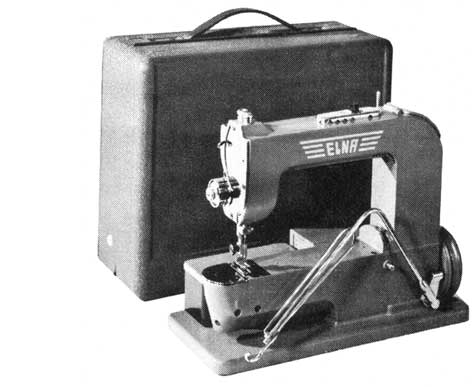L’ingénieur espagnol Dr Robert Ramon Casas retourna chez ses parents en 1933 après la fin de ses études. C’est là qu’il lui fut demandé, de réparer une vieille machine à coudre. Il eut ainsi l’opportunité d’en étudier le mécanisme qui le fascina et l’accapara entièrement. Il se souvint avoir des amis qui possédaient une fabrique de corsets et leur rendit visite. Il semblerait qu’une tante faisait aussi partie de ces amis. Il fut surpris par le nombre de machines industrielles utilisées qui possédaient un bras cylindrique permettant la couture des pièces tubulaires. Son esprit inventif fit immédiatement le rapport avec les besoins d’une maîtresse de maison pour coudre des jambes de pantalon ou des manches. Il réalisa aussi que la taille d’une telle machine devrait être réduite. C’est ainsi que naquit l’idée de la première machine domestique moderne incluant un bras libre. On pense que le premier prototype fonctionnel fut terminé en 1934. Celui-ci incluait un bras libre, un moteur interne et une lampe. La boîte de transport possédait un système unique épousant la forme du bras libre et permettant de l’utiliser comme une table de couture.
La guerre civile d’Espagne (entre juillet 1936 et avril 1939) le poussa à émigrer en Suisse pour continuer à développer sa machine. Il forma, avec un groupe d’entrepreneurs, une société du nom d’Electrina d’où provient le nom Elna. Quoi qu’il en soit, il fut vite évident que la fabrication d’une telle machine demanderait plus de capital ainsi que des ateliers modernes bien équipés. Suite au succès des négociations avec Tavaro SA, Genève, un fabricant de mécanismes de précision pour l’industrie d’armement, Tavaro s’appropria les droits de la machine et engagea ses services. La production put alors commencer. Dès 1940, les premières machines furent produites pour le marché intérieur et eurent un succès immédiat.
D’une manière intéressante, on peut remarquer que de nombreux brevets de Robert Ramon Casas étaient déposés au nom de la société Mefina SA de Binningen en Suisse. Plus tard, cette société déménagea à Fribourg, Suisse. Jusqu’á ce jour les relations exactes qui existaient entre Mefina et Tavaro restent non clarifiées même si les rapports annuels sont archivés chez Tavaro.
Avec l’arrivée de la seconde guerre mondiale, l’exportation de la machine ne commença pas avant 1948. L’Elna 1, nom sous lequel elle devint connue, fut produite jusqu’en 1952. Le nombre exact de machines fabriquées n’est pas connu. Elle fut ensuite remplacée par la Elna Supermatic, resultat d'un bond technologique spectaculaire. La série Star arriva en 1964 suivie par la première série compacte Lotus en 1968.
Tavaro continua le développement de la marque Elna en sortant l’Elnapress en 1973, les machines électroniques en 1978 puis en 1989, les machines « toutes électroniques » dites « computer ». Ceci résultat en des expansions de production successives et une place sur le marché mondial.
Malheureusement, durant les années 1990, avec l’explosion des frais de recherche et la diminution des ventes, la société suivit la trace d’autres fabricants européens et, en 1995, fit faillite et fut vendue.
La marque Elna continua d’être présente sur le marché avec les machines fabriquées en Asie. En août 2006, la Société Janome Sewing Machine Ltd de Toyio au Japon acquit l’ensemble des opérations mondiales de Elna International Corporation SA, Suisse.
Les modèles Elna produits
1940 – 1952 Elna 1
Mème si la première Elna n’ait pas été attribuée un numéro de modèle, elle devint connue sous le nom Elna 1 ainsi que sous le sobriquet affectueux de Grasshopper (la sauterelle). La qualité de son système d’origine était telle qu’elle ne subit que des modifications d’ordre mineures durant sa production. Les premières machines avaient un frein sur la genouillère qui fut supprimé. Les autres changements ayant été un moteur légèrement plus petit avec un capot plus plat et quelques changements dans la boîte de transport.
Description ci-dessous :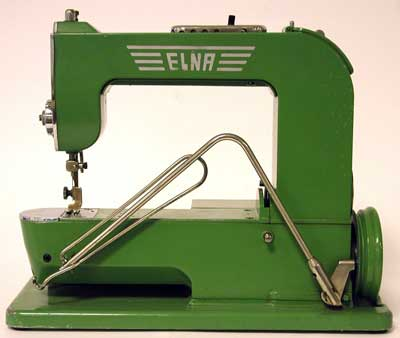
Coussinet
de frein
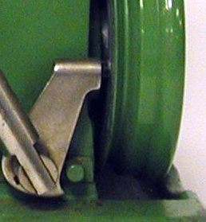 Machine portable
avec bras libre, point droit, moteur interne et lumière intégrés.
Genouillère avec coussinet de frein. Crochet rotatif horizontal, canette
amovible, régulateur de point situé sur le dessus et au bout
du bras libre. Moulage aluminium léger, couleur verte inhabituelle
puisque la couleur standard des machines de l’époque était
le noir avec décorations dorées. La boîte d’accessoires
se positionne précisément à l’arrière du
bras libre. La boîte de transport, épousant le bras libre permet
d’obtenir une large surface de travail, amélioration unique à
cette époque.
1952 – 1956 Elna Supermatic Elna 2
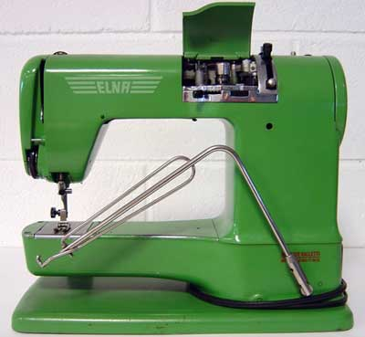La
première Supermatic fut lancée à la Foire industrielle
de Bâle le 19 avril 1952. Bien qu’elle n’aient pas été
attribuées un numéro de modèle en tant que tel, les premières
Supermatic furent connues sous le nom Elna 2.
Comparée à la Elna 1 cette machine avait, du point de vue technique,
plusieurs générations d’avance. C’était la
première machine capable de coudre des points arrière automatiques,
donnant la possibilité d’une nouvelle gamme de machines domestiques
avec des points décoratifs et pratiques comme le surfilage ou les fronces.
Cette possibilité était due à l’emploi des disques
ou cames à double profil. Un profil contrôlant le mouvement de
l’aiguille de gauche à droite pendant que le second profil contrôlait
le mouvement d’avant en arrière. Ce type de point dit super-automatique
donna en abrégé à l’Elna le nom de Supermatic.
De nombreuses heures de recherche et développement permirent l’amélioration
du nouveau système. Ces nouveaux points étaient créés
par un pivot central de came appelé, par Tavaro, Elnagraphe et l’introduction
d’un système innovant de griffes aux dents de forme pyramidale
permettait un entraînement quelle que soit la direction de la couture,
en opposition au système traditionnel aux dents en forme de «
factory roof » (toit d’usine).
Comme c’était la norme à cette époque les cames
étaient changées en ôtant un contre-écrou, permettant
l’extraction de la came. Cette manipulation était facilitée
par un instrument spécial à dents fourni avec la machine
Griffe d’entraînement pyramidale
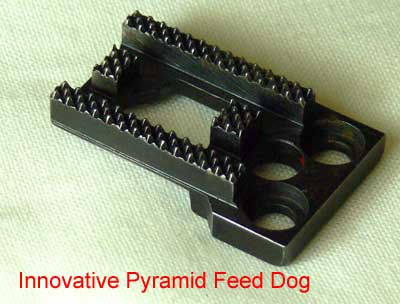
Description ci-dessous :
Machine portable à bras libre, moteur interne à friction et lampe intégrés. Moulage aluminium léger, couleur verte, Genouillère avec Rheostat - résistance variable - interne montée sur le côté du moteur. Crochet rotatif horizontal, canette amovible, tension de fil universelle, marche avant et arrière, boîte d’accessoires se glissant sous le bras libre. Boîte de transport verte incorporant une table de travail.
1956 – 1958 Elna Supermatic Elna 2
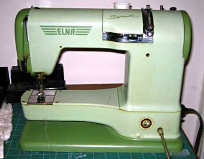
La seconde variante était deux tons verts et incluait un bouton d’éjection automatique des cames/disques permettant leur changement de façon simple et rapide.
1958 – 1963 Elna Supermatic Elna 2
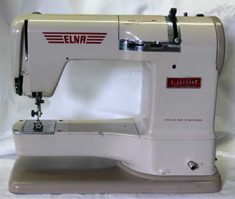
La troisième version était bicolore beige/brun. Les autres modèles de cette série étant la Z bras libre avec plateau Zig-Zag et la T point droit, bras libre avec plateau Transforma. Ces deux modèles pouvant être convertis en Supermatic.
1963 – 1964 Elna Supermatic Elna 2
La quatrième et dernière version était de deux tons gris.
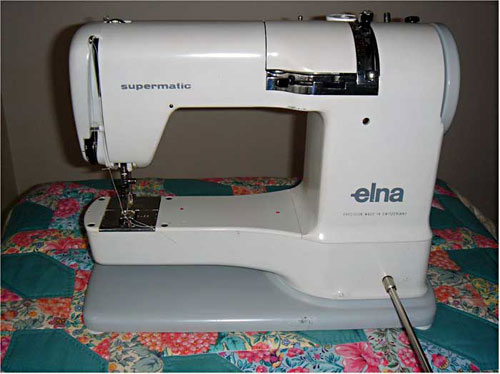
1958 – 1964 Elna Zig Zag etTransforma Elna 3
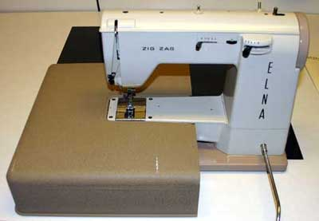
Le modèle Zigzag désigné modèle ZZ devint également connu comme Elna 3. C’était une machine bras libre avec point zigzag intégré, crochet rotatif horizontal, canette amovible, tension de fil universelle, positionnement de l’aiguille, marche avant et arrière, genouillère. La Transforma était désignée par le code ET ; C’était une machine automatique, bras libre, came/disque à profil unique interchangeable et indépendant, positionnement de l’aiguille, marche avant et arrière, genouillère.
1964 – 1971 Elna Supermatic Séries Star
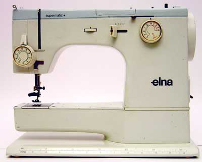
La série Star était plus qu’une simple nouveauté. Elle incorporait de nombreuses améliorations par rapport aux précédents modèles : nouveau type de levier d’échappement du fil mu par came et fixé au bas du crochet rotatif. Ce système a été modifié deux fois pendant la durée de production à cause d’un problème de bruit. Ces bruits étaient causés par l’accumulation de débris sous les glissières du levier. Autres nouveautés : 6 points intégrés et disponibles en tournant une simple molette, boutonnière automatique, positionnement de l’aiguille et pédale de régulateur en standard. En 1968 est introduit le régulateur électronique au pied à deux vitesses, le premier du genre. La machine était couleur ivoire avec un capot bleu clair.
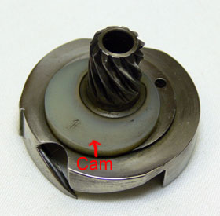
Crochet
rotatif des séries Star
Inversé pour montrer la came de l’échappement du fil
Echappement du fil en position ouverte et fermée
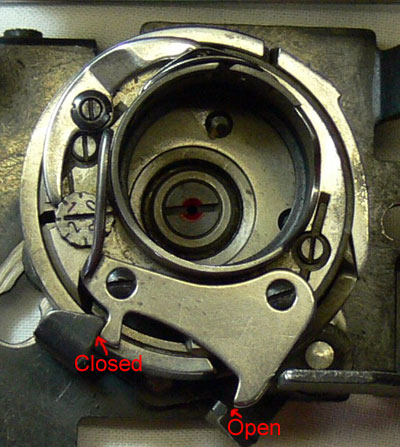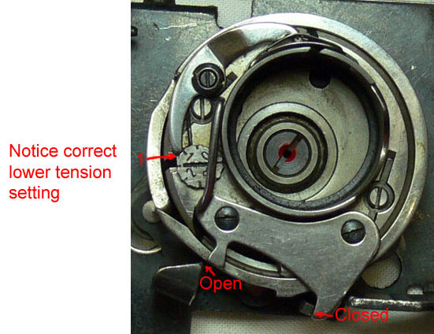
Noter le réglage correct de la tension basse
Closed = fermé / Open = ouvert
Description ci-dessous :
Machine portable
bras libre avec moteur interne à friction et lampe intégrés.
Aluminium léger moulé. Régulateur au pied, crochet rotatif
horizontal, canette amovible et extracteur de canette. Tension fil universelle,
marche avant et arrière. Boîte d’accessoires glissée
sous le bras libre. Boîte de transport grise incluant une extension
pour table de travail. Modèle 62 Supermatic bras libre. 64 plateau
plat. Couleur ivoire avec dessus bleu. Les autres modèles de la série
étant la 11 bras libre et point droit, la 13 plateau et point droit,
ivoire, la 21 Zigzag, bras libre, la 23 zigzag plateau , ivoire à dessus
gris, la 31 spéciale bras libre, la 33 spéciale plateau, ivoire
avec dessus rose, la 41 automatique bras libre, la 43 automatique plateau
ivoire avec dessus vert clair. Tous les modèles à l’exception
de la 31 et de la 33SP pouvaient être convertis en machine Supermatic.
1971 – 1978 Elna Star Séries SU
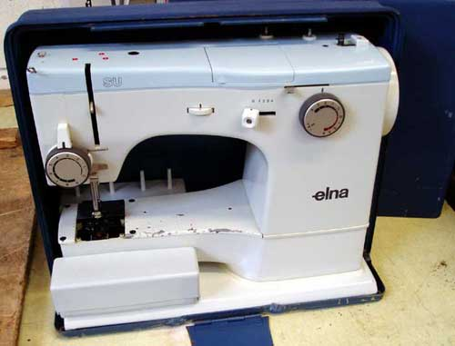
La SU était simplement une mise à jour qui incorporait un changement dans dans les 6 points de couture intégrés et des nouvelles manettes de contrôle. Boîte de transport bleue. Modèle 62SU bras libre, 64 SU plateau, ivoire avec dessus bleu clair. Autres modèles de la série: 11EC point droit bras libre, 13EC point droit plateau, ivoire, 21ZZ bras libre, 23ZZ plateau, ivoire avec dessus gris. 31SP bras libre, 33 SP plateau, ivoire avec dessus rose. 72 TSP bras libre, 74 TSP plateau, ivoire avec dessus vert clair. Tous les modèles à l’exception de la 31 et 33 SP pouvaient être convertis en machine Supermatic.
1968 – 1978 Elna Lotus
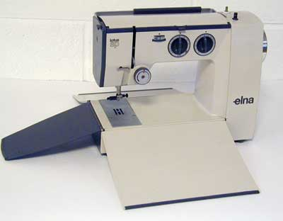
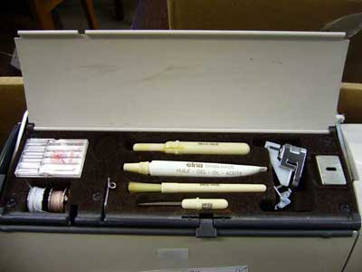Cette
petite Elna s’ouvrait comme les pétales de la fleur de Lotus
d’où son nom. La Lotus fût un nouveau design innovant d’Elna,
travail de Marcel Fresard. En 1968, ce fût considéré comme
une innovation marquante. La première machine à coudre compacte
du monde sans boîte de transport plateau ou boîte d’accessoires
séparés. Cette machine possédait une poignée de
transport pliable, 3 volets articulés qui éliminaient la nécessité
d’une boîte et formaient, ouverts, une surface de travail.
La boîte d’accessoires était incluse sur le dessus de la
machine ; les accessoires étaient rangés dans des alvéoles
et le tout fermé par un couvercle à charnières formant
le dessus de la machine. Autre particularité de la Lotus, un système
de double couplage permettant de bobiner la canette ou de coudre sans changer
la position. En position fermée, le levier preneur de fil était
maintenu en position basse, permettant la fermeture complète du volet
avant. Ceci pour éviter toute possibilité d’endommager
le volet lors du mouvement du levier. Poids plume et très compacte,
d’un design unique, elle fût choisie pour être exposée
en permanence dans la collection du Musée d’Art Moderne de New
York.
.
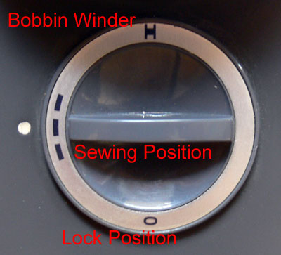
Description
ci-dessous :
Machine portable à plateau avec moteur à friction et lampe intégrés.
Moulage d’aluminium léger. Contrôleur au pied, crochet
rotatif horizontal, canette amovible et extracteur de canette. Tension de
fil universel. Marche avant et arrière, disponible sur ces modèles
: 15EC (point droit), 25ZZ (point zigzag), 35SP (3 point inclus, zigzag, point
ondulant et ourlet invisible). Couleur ivoire avec face et plaque arrière
gris foncé.
Brochure Elna approx 1959/1960 montrant les distributeurs australiens comme étant Robertson Reversible Sewing Machine Pty. Ltd. « Presgrave Buildings », 275 Collins Street, Melbourne
Elna Supermatic : la première machine au monde automatique
Principales caractéristiques:
1/ Boutonnière automatique
2/ Points automatiques et super-automatiques (Supermatic), point d’ourlet turc, point de Pariss
3/ Disque à insertion/extraction facile
4/ Tension de fil universel
5/ Bras libre
6/ Lumière intégrée
7/
Boîte de transport convertissable en table de travail
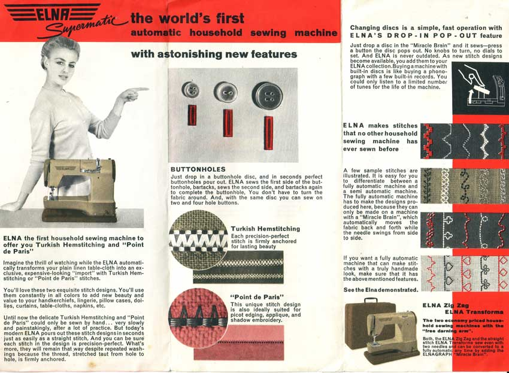
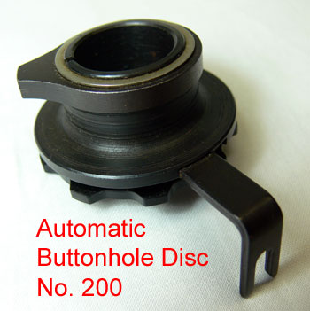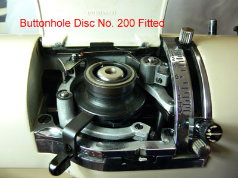
Disque boutonnière n°200 en place
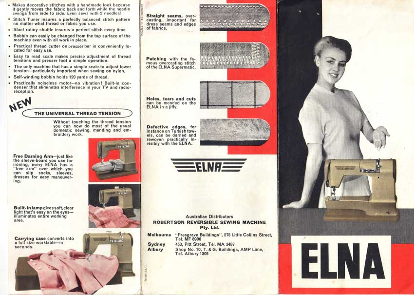
Elnagraphe : le « Miracle Brain » -le Cerveau Miraculeux-
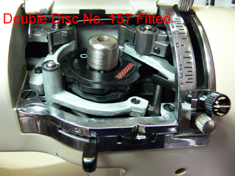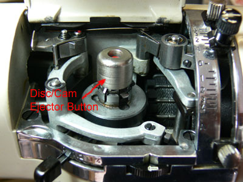
Double disque 157 en place / Bouton d’éjection de la came
Disques Elna
Les disques simples sont utilisés pour la Transforma et les modèles Automatiques, alors que la Supermatic pouvait utiliser les disques simples et doubles
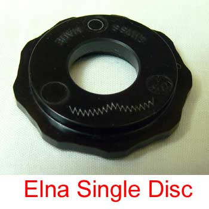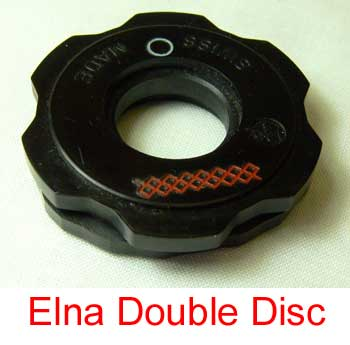
Disque simple Elna / Disque double Elna
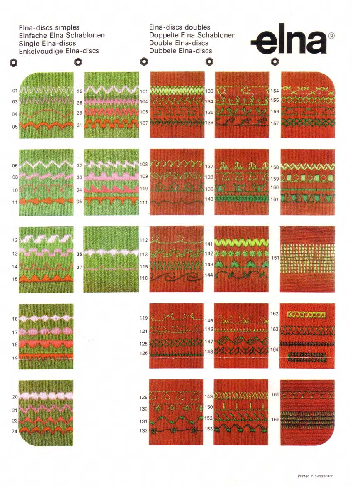
Datation des machines Elna
On sait que concernant la datation des premières machines Elna, les premiers chiffres du numéro de série donnent l’année de fabrication. Cependant ceci ne s’applique pas à l’Elna 1 et je n’ai pas suffisament de données pour dater cette machine. Concernant la Supermatic et les modèles suivants, cela reste vrai jusqu’en 1959. De 1960 à 1963 le numéro de série commence par un 1, le second chiffre donnant l’année de fabrication. Par exemple un numéro de série commençant par 12 est de 1962. A partir de la fin 1963 une lettre est introduite en début de numéro de série comme le montre le tableau.
| A - 1963 | L - 1971 | X - 1980 | G - 1989 |
| B - 1964 | M - 1972 | Y - 1981 | H - 1990 |
| C - 1965 | N - 1973 | Z - 1982 | K - 1991 |
| D - 1965/1966 | P - 1974 | A - 1983* | L - 1992 |
| E - 1066 | R - 1975 | B - 1984 | M - 1993 |
| F - 1967 | S - 1976 | C - 1985 | N - 1994 |
| G - 1968 | T - 1977 | D - 1986 | P - 1995 |
| H - 1969/1970 | U - 1978 | E - 1987 | |
| K - 1970/1971 | V - 1979 | F - 1988 |
A partir de 1983*, le système recommence à A
La semaine de fabrication est introduite en 1981. Les deux premiers chiffres indiquent la semaine. Y32 au début du numéro de série indique la 32ème semaine de 1981.
Les numéros de série des premières Elna, avant les séries
Star sont estampés à l’intérieur du moulage sur
la droite du levier releveur de fil. On le voit facilement en ouvrant la face
avant. Pour l’ouvrir complètement il est nécessaire de
baisser le levier presseur.
A partir de la série Star, le numéro de série est estampé
sur la plaque signalétique sous le volant. Si celle-ci manque, le numéro
est aussi estampé sur le moulage sous la prise. La série Lotus
a également son numéro sur la plaque signalétique. Il
est aussi estampé sur la base et peut être lu à travers
une fente de la plaque de base.
.
© Les Godfrey 2008
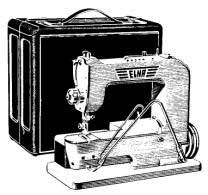